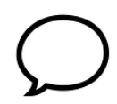
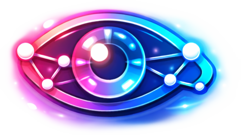

Dieses Spiel thematisiert Desinformation und emotionalisierende Inhalte auf Sozialen Medien.
Dieser Prototyp simuliert ein Social Media Feed.
Wie in realen Feeds siehst du Beiträge von Freunden aber auch Nachrichtenquellen.
Es haben sich aber auch Desinformationen in diesen Feed geschlichen.
Deine Aufgabe ist es, dir die Posts genau anzusehen, sie inhaltlich zu bewerten und entsprechend darauf
zu reagieren.
ABER: Bleib aufmerksam! Sowohl falsche Nachrichten als auch reale Inhalte können übertrieben,
emotional oder irreführend dargestellt sein.
Schau dir die Beiträge an und entscheide: ist der Inhalt seriös?
Du kannst sie liken und/oder teilen ODER kritisch makieren.
Deine Reaktion bestimmt, wie viele Punkte du bekommst.
Achtung: Eine gewählte Aktion lässt sich nicht zurücknehmen.
Du entscheidest selbst, auf welche Beiträge du reagierst und wie.
Like Beiträge, die du seriös/ wichtig/ positiv findest

Kommentare aus der simulierten Community
Teile Beiträge fiktiv mit Freunden, wenn du Beiträge wichtig/ positiv findest
Markiere Inhalte als kritisch, wenn du Zweifel hast/ Inhalt unseriös wirkt

Deine Interaktionen im Spiel (z.B. Likes, Bewertungen) werden in pseudonymisierter Form erfasst und ausschließlich im Rahmen einer wissenschaftlichen Arbeit ausgewertet. Zur technischen Umsetzung werden eine Session-ID sowie lokale Speichertechnologien (z.B. LocalStorage) verwendet. Es werden keine unmittelbar personenbezogenen Daten wie Name oder E-Mail-Adresse erhoben. Weitere Informationen zur Datenverarbeitung findest du in der Datenschutzerklärung.Alle Profile, Bilder und Beiträge sind fiktiv und wurden ausschließlich für dieses Spiel mithilfe von KI erstellt. Ähnlichkeiten zu realen Personen, Medienhäusern oder Orten sind zufällig und nicht beabsichtigt. Beiträge und Bilder können Rechtschreibfehler enthalten.